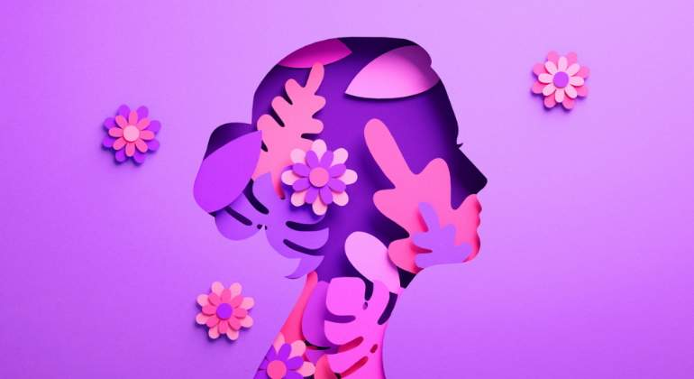

El Día Internacional de la Mujer fue promulgado por la Organización de las Naciones Unidas (ONU) en el año 1975, pero realmente se ha celebrado desde mucho antes. Anteriormente las mujeres reclamaban derechos básicos, tales como ejercer el derecho al voto en las elecciones, el derecho a ocupar posiciones de responsabilidad en política y en la sociedad en general, derecho al trabajo y al estudio. En la actualidad, el Día Internacional de la Mujer es una fecha significativa para reivindicar sus derechos básicos y fundamentales.
En la mitología feminista, el morado y el violeta representa la lucha de las mujeres por la igualdad y contra la discriminación. Simboliza la lucha por los derechos de las trabajadoras, la pertenencia al feminismo y recuerda tanto el origen del movimiento como la necesidad de seguir luchando.
